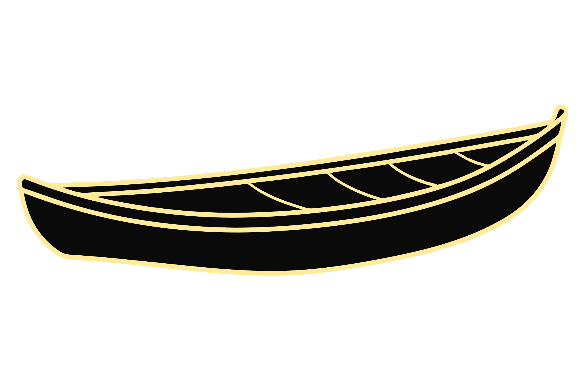

Buscar en un país que normalizó la ausencia
Explora el mapa en penumbra con la luz para descubrir los caminos de la investigación o pulsa cada nodo.
Del Acuerdo de Paz a la Ley de Mujeres Buscadoras
Reúne cada indicio disperso llevándolo hacia el expediente central (o pulsa Enter sobre cada indicio).
0 / 5 indicios reunidos
![](data:image/svg+xml,%3c?xml%20version='1.0'%20encoding='UTF-8'?%3e%3csvg%20id='Layer_2'%20data-name='Layer%202'%20xmlns='http://www.w3.org/2000/svg'%20viewBox='0%200%2057.57%2081.46'%3e%3cdefs%3e%3cstyle%3e%20.cls-1%20{%20fill:%20%231193ff;%20}%20.cls-2%20{%20fill:%20%23fff;%20}%20.cls-3%20{%20fill:%20%239d7143;%20}%20%3c/style%3e%3c/defs%3e%3cg%3e%3cpath%20class='cls-1'%20d='M1.19,70.25v5.69l2.61,1.91,49.01-1.91,4.13-2.5-.68-3.67c-.97-3.36-1.46-6.83-1.46-10.3,0-1.89.14-3.78.43-5.67.23-1.52.38-3.05.42-4.59l.64-22.05.16-5.63.21-7.24.16-5.63.24-8.18H19.14s.74,3.26,1.75,8.18c.36,1.71.75,3.61,1.14,5.63.46,2.28.93,4.73,1.38,7.24.34,1.85.68,3.74.99,5.63,1.95,11.53,3.32,23.1,1.68,26.18-3.53,6.63-12.35,10.8-18.66,10.8s-6.25,6.1-6.25,6.1Z'/%3e%3cpath%20d='M3.65,78.34l-2.94-2.15v-5.94c0-.27.08-6.58,6.73-6.58,6.07,0,14.76-4.03,18.23-10.55.44-.84.67-2.47.67-4.85,0-4.51-.81-11.58-2.4-21.01-.31-1.89-.65-3.78-.99-5.63-.47-2.56-.93-4.99-1.38-7.24-.39-2.03-.78-3.93-1.14-5.63-1-4.86-1.75-8.14-1.75-8.17l-.13-.59h39.04l-.99,33.96-.97-.03.96-32.97H19.74c.26,1.16.87,3.93,1.63,7.6.36,1.71.75,3.61,1.14,5.64.45,2.25.92,4.69,1.38,7.25.34,1.85.68,3.75.99,5.64,1.6,9.49,2.41,16.61,2.41,21.17,0,2.58-.26,4.32-.78,5.31-3.64,6.83-12.74,11.06-19.08,11.06-5.7,0-5.76,5.39-5.76,5.62v5.45l2.27,1.66,48.72-1.9,3.74-2.26-.62-3.34c-.97-3.36-1.46-6.87-1.46-10.39,0-1.91.15-3.84.44-5.74.23-1.54.37-3.06.41-4.53l.29-9.8.97.03-.29,9.8c-.04,1.51-.18,3.07-.42,4.65-.28,1.85-.43,3.73-.43,5.59,0,3.43.48,6.85,1.44,10.17l.75,4.04-4.52,2.73h-.12s-49.18,1.92-49.18,1.92Z'/%3e%3c/g%3e%3cg%3e%3cpath%20class='cls-3'%20d='M57.07,74.07v3.86c0,.51.06,3.04-2.6,3.04h-14.36l-1.14-3.43s-8.76,3.43-17.6,3.43H1.8c-.73,0-1.31-.59-1.31-1.31v-2.56c0-.73.59-1.31,1.31-1.31h20.01l18.33-3.21h15.43c.83,0,1.5.67,1.5,1.5Z'/%3e%3cpath%20d='M54.48,81.46h-14.71l-1.1-3.29c-1.96.71-9.64,3.29-17.3,3.29H1.8c-.99,0-1.8-.81-1.8-1.8v-2.56c0-.99.81-1.8,1.8-1.8h19.97l18.37-3.21h15.43c1.09,0,1.98.89,1.98,1.98v3.86c0,.47,0,1.81-.9,2.72-.53.53-1.26.8-2.18.8ZM40.47,80.49h14.01c.65,0,1.16-.17,1.5-.52.62-.62.62-1.66.62-2v-3.9c0-.56-.46-1.02-1.02-1.02h-15.39l-18.37,3.21H1.8c-.46,0-.83.37-.83.83v2.56c0,.46.37.83.83.83h19.57c8.64,0,17.34-3.37,17.43-3.4l.47-.19,1.2,3.58Z'/%3e%3c/g%3e%3crect%20x='48.32'%20y='67.26'%20width='7.73'%20height='.97'/%3e%3cpolygon%20points='27.07%2070.53%2026.9%2069.58%2040.14%2067.26%2043.81%2067.26%2043.81%2068.23%2040.18%2068.23%2027.07%2070.53'/%3e%3cg%3e%3cpath%20class='cls-3'%20d='M42.45,77.12s-1.56-.25-3.48.42l3.48-.42Z'/%3e%3cpath%20d='M38.68,78.16l-.32-.91.46-.16c2.01-.7,3.65-.45,3.72-.44l.48.08-.15.95-.48-.07s-1.48-.22-3.25.4l-.46.16Z'/%3e%3c/g%3e%3cg%3e%3cpath%20class='cls-2'%20d='M20.9,8.66c.36,1.71.75,3.61,1.14,5.63h34.64l.16-5.63H20.9Z'/%3e%3cpath%20d='M57.14,14.78H21.64l-.08-.39c-.39-2.03-.78-3.92-1.14-5.63l-.12-.58h37.03l-.19,6.6ZM22.44,13.81h33.77l.13-4.67H21.49c.3,1.44.62,3.01.94,4.67Z'/%3e%3c/g%3e%3cg%3e%3cpath%20class='cls-2'%20d='M23.42,21.54c.34,1.85.68,3.74.99,5.63h31.89l.16-5.63H23.42Z'/%3e%3cpath%20d='M56.77,27.66H24l-.07-.4c-.31-1.89-.65-3.78-.99-5.63l-.1-.57h34.12l-.19,6.6ZM24.82,26.69h31.01l.13-4.67h-31.97c.28,1.54.56,3.1.82,4.67Z'/%3e%3c/g%3e%3c/svg%3e) Calzado en terreno
Calzado en terreno
Investigación
Identidad
Exhumación
Acuerdo de Paz
Geografías de la ausencia: el Valle del Cauca
Une cada libro con su par territorial de igual color y símbolo (arrástralos o selecciónalos con Enter).
Libro ◆
Territorio ◆
Libro ●

Canoa ●
Libro ▲
Mural ▲
Voces y tensiones: las buscadoras frente al Estado
Reconstruye la fotografía ubicando cada fragmento en su lugar dentro de la cuadrícula.